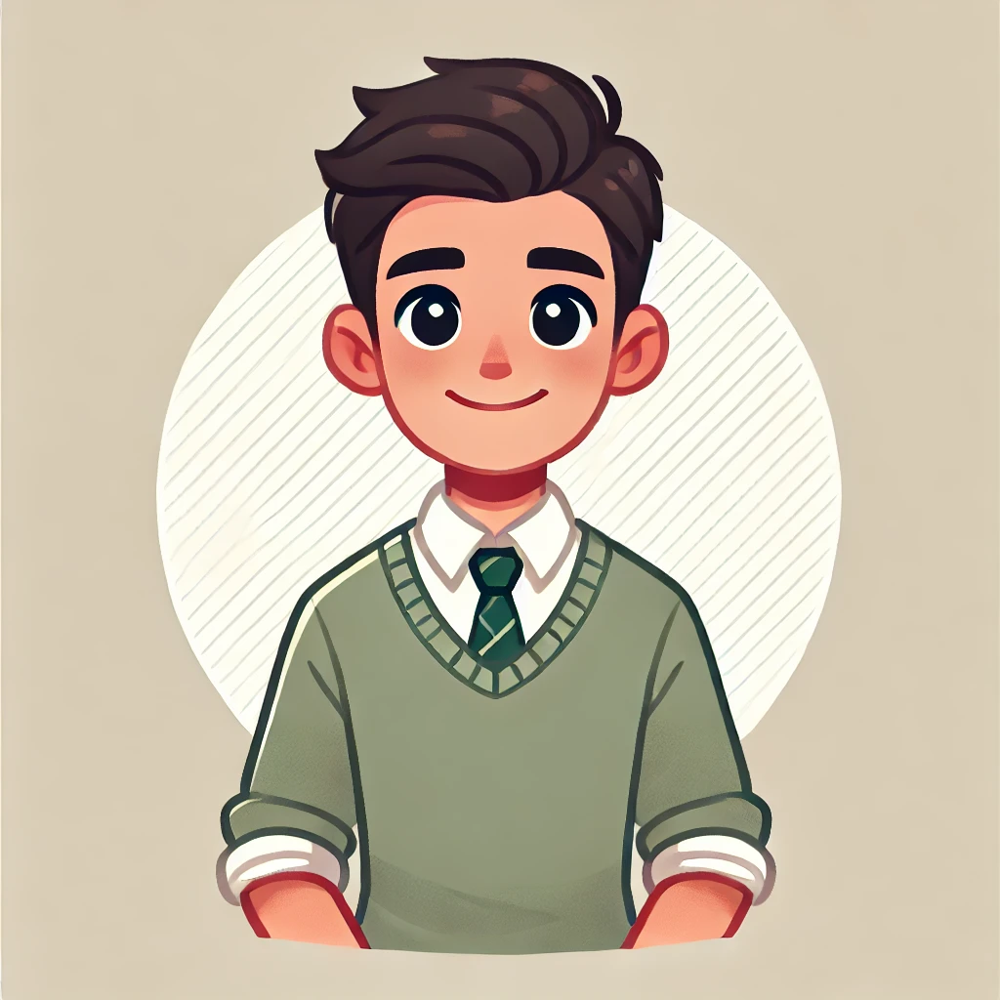

LIDERES DEL MAÑANA
Eypril Cecilia De las Torres Gabista
Propuestas
Instalar un cine en el auditorio del colegio
Implementar "Día sin tareas" cada dos semanas
Convertir las clases de arte en sesiones de pintura en vivo en el parque
Colocar hamacas en los pasillos para descansar entre clases
Organizar concursos de talentos con premios sorpresa cada mes
Dr. Liam Casanova Gabista

Propuestas
Colocar una máquina de café en cada salón
Instalar una pista de patinaje en el gimnasio
Proveer una hora diaria de videojuegos educativos
Construir un puente aéreo que conecte todos los edificios del colegio
Salidas culturales a museos y teatros una vez por trimestre